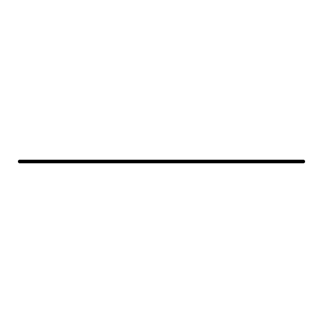
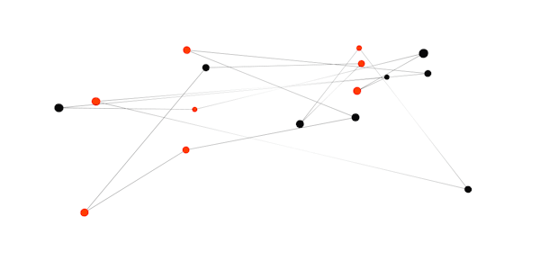

Signal Monitoring
Calibration
Single Player
Multiplayer Player

Signal Monitoring
In this section you will observe your brain activity being recorded from the EEG system! Please read the following instructions carefully before continuing:
- Make sure the connection status says Headset Connected!
- When you click on Begin Signal Monitoring, a new window will show raw data being received from the headset in the top row and filtered EEG data in the bottom row
- Notice how the filtered EEG data looks smoother then the raw data. This is because of the high frequency noise is being removed using a bandpass filter (1-20Hz).
- It's also important to check the impedance levels of the electrodes to make sure they're getting good quality data
- Click on the "Channels" tab in the cognionics data acquisition window and make sure the eight electrodes on the bottom right-hand side of the screen are all green
- If one or more electrode channels are not solid green, try readjusting the individual electrodes on the EEG equipment and make sure they're all touching your head until the impedances turn green
- When all the electrodes are green on your impedance check, you can move on to the next step
- When you blink your eyes during an EEG recording, you'll notice a specific type of EEG activity happening in channels F3 and F4
- The type of activity that should be elicited from eye blinks is a positive spike
- Notice that the electrodes farther away from your eyes (i.e. P3, P4, O1, and O2) have a spike with a lower amplitude than that of electrodes F3 and F4
- Lastly, if you clench your teeth, or scrunch up your face like your angry, you'll notice a sudden change in EEG frequencies corresponding to this behavior
- Click Begin Signal Monitoring when ready!
- Once you've made sure the EEG is recording properly (your eyeblinks and clenched face activity is showing and your impedance check is all green) proceed to the Calibration Stage

Alpha Wave Calibration
- Test

Single Player
- Test

Multiplayer
- Test